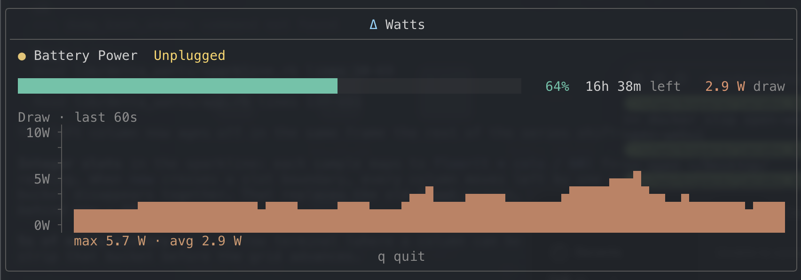

Δ Watts
A quiet TUI for Mac laptop power: charge, remaining time, live system draw, and the last 60 seconds of history.

Install
./install.sh
That builds the power sampler and adds a dwatts alias to your shell profile.
Restart the shell (or source the profile), then:
dwatts
Needs Ruby 3.0+ and Xcode Command Line Tools (cc).
Uninstall with ./install.sh --uninstall.
You can also run it without the alias:
ruby bin/delta_wattsWhat it shows
- AC vs battery, charging / unplugged
- Charge bar and percent
- Time remaining, or time to full
- Live system draw (watts)
- 60-second draw plot, auto-scaled
Live watts come from IOReport energy counters and the SMC PSTR key —
the same class of data as powermetrics, without sudo.
Charge and runtime still come from the battery pack via ioreg.